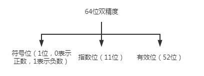
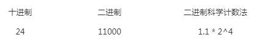
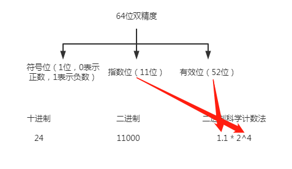
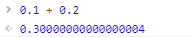
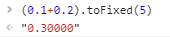
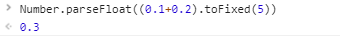

javascript表示小数的方法
IEEE754标准表示方法：
单精度
双精度(64位)
延伸单精度
延伸双精度
==javascript 采用的是IEEE754的 双精度(64位)==
64位意思为由0或1组成这64位
IEEE754将这64位分为三个部分

==科学计数法：==
1 | 666 可表示为 6.66 * 10^2 |
当数字越大的时候使用科学计数法可以节省更多的空间和时间，计算机也采用这种方式
使用计算机的科学计数法来表示24时，可以表示为：

再结合IEEE754双精度（64位）

使用计算机的科学计数法表示小数
==十进制转为二进制采用乘2取正法==
==十进制 0.125==
0.125 * 2 = ==0==.25 整数部分为0
0.25 * 2 = ==0==.5 整数部分为0
0.5 * 2 = ==1== 整数部分为1
==转化为二进制为 0.001==
==为什么JavaScript中0.1 + 0.2 不等于0.3==
十进制 0.1
0.1 * 2 = ==0==.2 整数部分为0
0.2 * 2 = ==0==.4 整数部分为0
0.8 * 2 = ==1==.6 整数部分为1
0.6 * 2 = ==1==.2 整数部分为1
0.2 * 2 = ==0==.4 整数部分为0
……
转化为二进制为 0.0001100110
==0.1 使用计算机科学计数法表示为 1.10011 * 2^-4==
十进制 0.2
0.2 * 2 = ==0==.4 整数部分为0
0.4 * 2 = ==0==.8 整数部分为0
0.8 * 2 = ==1==.6 整数部分为1
0.6 * 2 = ==1==.2 整数部分为1
0.2 * 2 = ==0==.4 整数部分为0
0.4 * 2 = ==0==.8 整数部分为0
……
转化为二进制为 0.001100110
==0.2 使用计算机科学计数法表示为 1.10011 * 2^-3==
即0.1与0.2使用计算机科学计数法表示时都是无限长的
而使用IEEE754的双精度(64位)来表示数字的话肯定会出现后续位置无法存储进去，因为指数位只有11位，有效数只有52位，有效位肯定无法存储这个无限长度的二进制数，这样就迫使计算机取一个近似的数字
==因此0.1 + 0.2之后在转化为十进制时就已经不是纯正的0.3了==
解决办法
不准确的数出现时会与得到的数字之间相隔很多个0

因此可以使用四舍五入法
首先使用toFixed保留几位小数，然后使用parentFloat将其转化为小数

